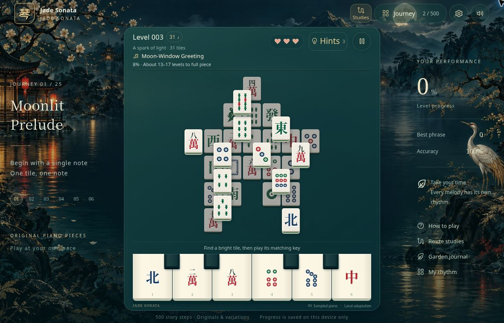

MAHJONG MEETS PIANO
A little music.
A garden of your own.
Find a matching tile in a moonlit garden.
Every clear brings an original melody one note closer.
One tile. One note.
You don’t need to play the piano or race a countdown. Read the layered board, touch one of six piano keys, and let a melody unfold at your own pace.

HOW TO PLAY
Find the pattern.
Hear the melody.
Find an uncovered tile
Look for a mahjong symbol that is not covered by another tile.
Play its matching key
Match the symbol on one of six piano keys. Each correct match clears a tile and plays the next note.
Build a musical phrase
Clear the board to continue your journey. Listen back to the reference score and your own performance.
Follow the music into the garden.
Travel from a moonlit courtyard through rivers, forests and clouds, then find your way home. The journey spans 500 story levels, with encores beyond.
Hear your progress
Begin with a short phrase and discover original piano pieces and variations along the way. Reference playback and saved performances let you revisit what you have played.
Piece together a pavilion
Collect and place pavilion and bridge parts across the first ten levels. Every clear leaves something behind, in the music and in your garden.
Editions & support
The WeChat and Douyin mini-game editions are in preparation and have not launched. Confirmed availability and download links will be added here.
Have a question or something to share?
kazutokirigayakirito354@gmail.com